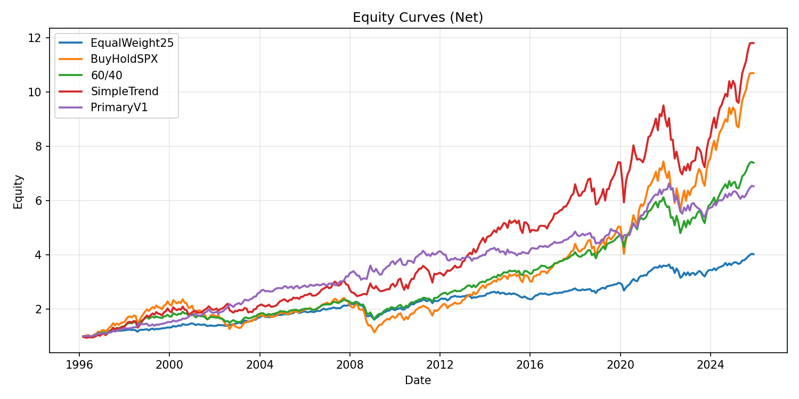
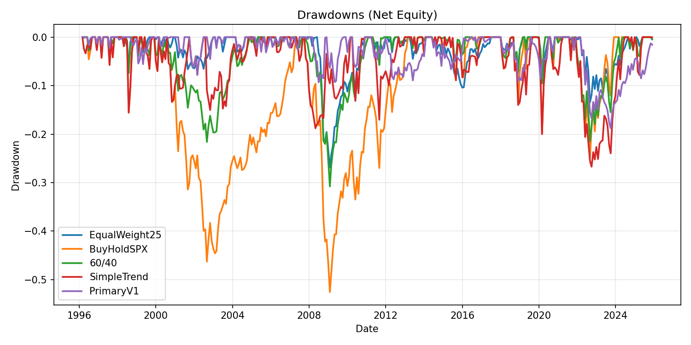
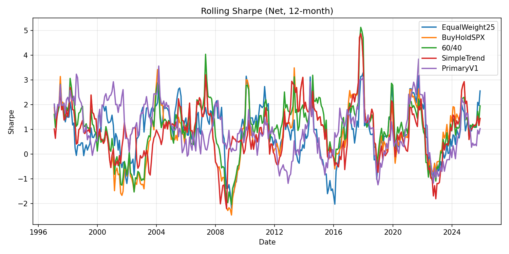

Final Presentation
Primary Model Pipeline and Benchmark Integration
Scope: end-to-end primary model implementation (data → signal → weights → backtest → reporting) with real artifacts from reports/ and data/clean/ .
Built a production-style data layer with canonical schema and QC reporting.
Implemented PrimaryV1 signal builder and deterministic signal-to-weight strategy mapping.
Integrated PrimaryV1 into benchmark runner and report outputs (CSV/HTML/plots).
Validated with targeted tests covering alignment, no-lookahead, treasury math, and weight constraints.
PrimaryV1 vs Benchmarks
PrimaryV1 Sharpe
0.8572
Highest in table
PrimaryV1 Max DD
-18.76%
Shallowest drawdown
PrimaryV1 Ann Return
6.49%
Below SimpleTrend / BuyHoldSPX
PrimaryV1 Avg Turnover
0.0719
Lower than SimpleTrend (0.0810)
1) Repo & System Overview
Compact Repo Map
primary_model/
├── src/primary_model/
│ ├── data.py ├── treasury.py ├── signals.py
│ ├── strategy.py ├── backtest.py ├── benchmarks.py
│ ├── metrics.py ├── plots.py └── __init__.py
├── scripts/
│ ├── prepare_data.py ├── data_qc.py
│ ├── run_primary_variant1.py
│ └── run_benchmarks.py
├── tests/
│ ├── test_data_loader.py
│ ├── test_treasury.py
│ ├── test_backtest_alignment.py
│ ├── test_signals.py
│ ├── test_strategy.py
│ └── test_run_benchmarks_smoke.py
├── data/clean/*.csv
└── reports/*
Core Module Responsibilities
Module
Role
data.py Load canonical clean CSVs, align universe returns, apply treasury return adjustment. treasury.py Convert yield levels into approximate bond total returns via duration + carry. signals.py Build Variant1 indicators, expanding z-scores, composite score, and BUY/HOLD/SELL signals. strategy.py Map discrete signals to long-only portfolio weights with carry and pre-signal rules. backtest.py Run vectorized t+1 backtests, turnover, transaction-cost deduction, and equity series. benchmarks.py Generate benchmark weights: EqualWeight25, BuyHoldSPX, 60/40, SimpleTrend. metrics.py Compute annualized return/vol, Sharpe, max drawdown, Calmar, and summary tables. plots.py Render equity, drawdown, and rolling-Sharpe strategy plots.
2) Data Pipeline + QC
Canonical clean schema: Date, Price, Return (monthly decimal returns).
Cleaner behavior (scripts/prepare_data.py ): detect header row containing Date , map PX_LAST→Price and CHG_PCT_1D→Return , coerce types, sort chronologically, and write canonical CSVs.
Coverage (from data/clean/*.csv )
Asset
Rows
Min Date
Max Date
Missing Return %
bcom 360 1996-01-31 2025-12-31 0.0000 corp_bonds 360 1996-01-31 2025-12-31 0.0000 spx 360 1996-01-31 2025-12-31 0.0000 treasury_10y 360 1996-01-31 2025-12-31 0.0000
QC Highlights (from reports/data_qc.html )
Overlap: raw overlap rows = 360 , adjusted overlap rows = 359 ; window = 1996-01-31 to 2025-12-31 .Key raw correlations: SPX-BCOM = 0.344972, SPX-CorpBonds = 0.360750, SPX-Treasury = 0.141611, BCOM-Treasury = 0.190245, Treasury-CorpBonds = -0.561417.Treasury annualized vol: raw = 0.321270, adjusted = 0.077085.
3) Treasury Fix
treasury_10y “Price” is yield-like, not a bond price index. QC flags this explicitly (range 0.5282 to 6.9430). Using percentage changes in yields directly as “returns” inflates volatility and misrepresents bond behavior.
Implemented correction: keep treasury Price as yield level, but replace treasury Return with a duration-based total-return proxy.
Formula y = yield_percent / 100price_return = -duration * diff(y)carry = y.shift(1) / 12total_return = price_return + carry
Assumption used: duration = 8.5 . This stabilizes treasury risk behavior but remains an approximation; duration sensitivity should be tested later.
4) Backtest Engine (Correctness & No-Lookahead)
t+1 alignment: weights decided at date t are applied to returns at t+1 via returns.shift(-1) .Long-only normalization: negative weights are clipped to 0 and rows are normalized to sum to 1 when possible.Turnover: 0.5 * sum(abs(w_t - w_{t-1})) .Transaction cost model: cost = turnover * (tcost_bps / 10000) .Current runs: tcost_bps = 0.0 .
5) Benchmarks Implemented
EqualWeight25: 25% to each of the four assets every period.BuyHoldSPX: 100% SPX static allocation.60/40: 60% SPX + 40% Treasury static allocation.SimpleTrend: SPX fast/slow SMA regime switching between risk-on (SPX) and risk-off (Treasury).
6) PrimaryV1
Indicators
Expanding z-score (shift(1))
Composite score
BUY/HOLD/SELL signal
Weights mapping
t+1 backtest
Signal Construction Rules
Indicators: spx_trend , bcom_trend , credit_vs_rates , risk_breadth .
Normalization uses prior history only (history = x.shift(1) ) to avoid lookahead.
Thresholds: BUY if score > 0.5 , SELL if score < -0.5 , else HOLD.
Weight Mapping Rules
BUY: equally split across SPX, BCOM, Corp Bonds (1/3 each).SELL: 100% Treasury.HOLD: carry previous period weights.Before first valid signal: default equal-weight across all assets (or risk-off mode if configured).Weights are reindexed to returns index, forward-filled, and remaining NaNs are filled with equal weight.
7) Results (Tables + Visuals)
Main Performance Table
Strategy
ann_return
ann_vol
sharpe
max_drawdown
calmar
avg_turnover
EqualWeight25 0.047792 0.071808 0.687576 -0.268990 0.177673 0.000000 BuyHoldSPX 0.082662 0.152810 0.598620 -0.525605 0.157271 0.000000 60/40 0.069366 0.093251 0.767870 -0.307769 0.225384 0.000000 SimpleTrend 0.086249 0.129104 0.707779 -0.267169 0.322827 0.081006 PrimaryV1 0.064903 0.076990 0.857190 -0.187608 0.345952 0.071927
Excess vs EqualWeight25
Strategy
mean_excess_annual
months_won
months_lost
EqualWeight25 0.000000 0 0 BuyHoldSPX 0.042102 226 132 60/40 0.022232 208 150 SimpleTrend 0.042004 220 138 PrimaryV1 0.016622 185 157
Correlation with EqualWeight25
Strategy
corr_with_equal_weight
EqualWeight25 1.000000 BuyHoldSPX 0.759516 60/40 0.838412 SimpleTrend 0.588320 PrimaryV1 0.528013
PrimaryV1 Signal Counts
Signal Count
BUY 81 HOLD 191 SELL 73
Visual Diagnostics

Figure 1. Net equity curves across EqualWeight25, BuyHoldSPX, 60/40, SimpleTrend, and PrimaryV1.

Figure 2. Drawdown comparison; PrimaryV1 shows the shallowest peak-to-trough loss in this run.

Figure 3. 12-month rolling Sharpe for all strategies.
8) Validation & Test Coverage
test_data_loader.py : data coercion, return derivation, universe alignment behavior.test_treasury.py : treasury duration/carry formula numeric correctness.test_backtest_alignment.py : verifies t+1 return application in backtest.test_signals.py : history-only z-score logic, threshold mapping, and signal schema.test_strategy.py : BUY/HOLD/SELL mapping, carry behavior, pre-signal behavior, non-negative/sum-to-1 constraints.test_run_benchmarks_smoke.py : end-to-end PrimaryV1 weight shape and constraints sanity test.
No-Lookahead Checklist
[x] Expanding z-score uses shift(1) history for normalization.
[x] Backtest applies w_t to r_{t+1} using returns.shift(-1) .
[x] Test suite includes explicit tests for both safeguards.
9) Repro Steps + Deliverables Inventory
Recommended Reproduction Commands
cd /home/cristhian/Projects/ssga-meta-labeling/primary_model
pip install -r requirements.txt
python scripts/prepare_data.py
python scripts/data_qc.py
python scripts/run_primary_variant1.py
python scripts/run_benchmarks.py
pytest -q
Deliverables under reports/
File Purpose
benchmarks_summary.csv Main strategy performance table. benchmarks_summary.html Benchmark report (performance, excess/correlation, sanity tables, plots). data_qc.html Data quality report (coverage, overlap, correlations, annualized stats). primary_v1_signal.csv PrimaryV1 indicators, z-scores, composite score, and signal timeline. primary_v1_weights.csv Aligned PrimaryV1 portfolio weights used in benchmark run. primary_v1_backtest.csv PrimaryV1 backtest time series output. primary_v1_summary.csv Single-row PrimaryV1 performance summary. assets/equity_curves.png Equity curves plot. assets/drawdowns.png Drawdown plot. assets/rolling_sharpe.png Rolling Sharpe plot.
Artifact Integrity
All required Stage 1 artifacts were found and parsed. No missing-data fallback was required.
10) Limitations / Next Steps
Transaction costs are currently modeled at 0 bps in benchmark runs; add robustness runs at non-zero costs.
Treasury duration is fixed at 8.5; add sensitivity analysis to duration assumptions.
PrimaryV1 uses fixed default windows/thresholds; add walk-forward and stability tests before meta-labeling rollout.
Consider adding a single consolidated machine-readable model card JSON for downstream automation.
Appendix: Data Presence Warning Template
WARNING TEMPLATE: If future runs are missing required artifacts (for example benchmarks_summary.csv or plot files), this report should show a visible warning block in this section and omit only the missing components.